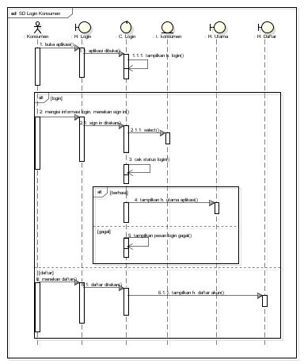

Nama : Ani KInanti
NIM : 1811500024
Kelompok : TI6A
1. Pada pertemuan kali ini yang di bahas yakni live session lewat google meet,diskusi tentang perencanaan uts dan tugas - tugas serta materi yang pernah di bahas sebelumnya.
Serta pembahasan tentang materi Sequence Diagram utk pertemuan ke 7.
2. Kali ini masih menggunakan software astah
3. konsep dari sequence diagram yakni Sequence Diagram menggambarkan urutan proses yang terjadi pada sebuah halaman/form pada aplikasi/sistem,
4. Bahannya adalah Sequence Diagram sangat erat hubungannya dengan Deskripsi UseCase+ Rancangan Layar + Class Diagram, Elemen inti pada Sequence Diagram Lifeline (Actor), Lifeline (Boundary), Lifeline (Control), Lifeline (Entity),
Message Actor => pengguna aplikasi/sistem
Boundary => form/halaman di aplikasi
Control => code program
Entity => tabel
Message => aktivitas di aplikasi/sistem
Actor berinteraksi dengan Boundary, Boundary berinteraksi dengan Control, Control berinteraksi dengan Entity
Masing-masing interaksi digambarkan dengan garis panah berisi aktivitas (message)
5. Selanjutnya pengajar menjelaskan dan mempraktekkan dalam membuat sequence diagram pada astah
6. Berikut hasil project latihan astah saya dan screenshoot gambarnya.
Hasil file project astah Download
